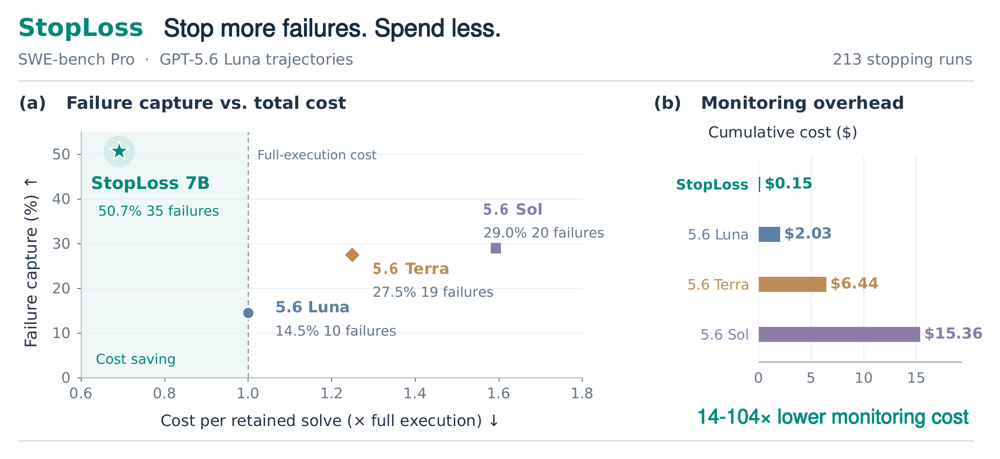
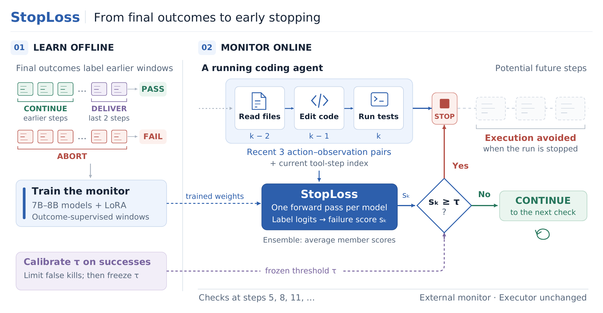

StopLoss is a small monitor that learns from finished runs to tell when a coding agent is likely to fail, and stops the run early, at a fraction of what it costs to ask an LLM judge.
Can early stopping pay for itself?
Coding agents keep working on runs that will fail verification, and asking a frontier model to watch for this is expensive in its own right. We introduce StopLoss, a small external monitor that learns failure recognition from completed trajectories and their verifier outcomes. The name is inspired by the stop-loss order in finance: StopLoss ends a run early when the run is likely to fail, which saves resources. Final outcomes label earlier local windows, so a fine-tuned language model can score the most recent tool steps in a single forward pass, and a threshold calibrated on successful runs turns that score into an abort decision without changing the executor. Trained on GPT-family SWE-rebench trajectories and evaluated on SWE-bench Verified and a SWE-bench Pro subset with GPT and Claude executors, StopLoss is compared against six general-purpose judges reading identical windows. Outcome supervision lifts failure prediction from near chance to a useful signal at the first check, at one to two orders of magnitude lower cost per check than any tested judge. This translates into savings: relative to completing every task, StopLoss lowers cost per retained solve by 4.5% on Verified while preserving 99% of successful runs, and by up to 31% on the costlier Pro subset, reaching 48% with a Qwen3-8B backbone, and in all four settings its cost per retained solve is below that of every judge policy. Outcome-trained small monitors can make failure recognition cheap enough for early stopping to pay for itself.
Learn from outcomes, stop at a calibrated threshold
StopLoss needs only completed runs and their verifier outcomes. It watches a running agent from the outside, reads nothing but the trajectory text, and never changes the agent.
Outcomes label earlier windows
Every window of a failed run is labelled ABORT. In a successful run, windows at the last two tool steps are DELIVER and earlier ones CONTINUE. A window is the step count plus the three most recent action–observation pairs.
A small model scores one window
A 7–8B model (Qwen2.5-7B-Instruct, Qwen3-8B or Qwen2.5-Coder-7B-Instruct) is fine-tuned with LoRA. The failure score is the probability of ABORT among the three labels, read from the next-token logits: one forward pass, no generated text.
Calibrate once, then stop early
A threshold τ is set on successful runs so that at most 5% of them would be stopped, then frozen. At tool steps 5, 8, 11, …, the run stops as soon as the ensemble's average score reaches τ.


Cheaper per solve than every tested judge, in all four settings
StopLoss is trained on SWE-rebench runs of GPT-family executors and evaluated on SWE-bench Verified and a three-repository SWE-bench Pro subset, with GPT-5.6 Luna and Claude Sonnet 4.6 as executors. Six LLM judges read the same windows, and every method pays for the checks it makes and for the successful runs it stops. Costs are estimated from frozen list prices for API calls and from GPU time for StopLoss.
Change in cost per retained solve
Relative to running every task to completion, monitoring included. Left of zero saves money.
SWE-bench Verified · GPT-5.6 Luna
SWE-bench Verified · Claude Sonnet 4.6
SWE-bench Pro · GPT-5.6 Luna
SWE-bench Pro · Claude Sonnet 4.6
StopLoss bars are seed ensembles of each backbone (5, 4 and 4 seeds). GPT-5.6 judges read GPT-5.6 Luna runs and Claude judges read Claude Sonnet 4.6 runs. Hover or focus a row for its monitoring cost and stopping outcomes.
Full results
Table 1 of the paper. Bold marks the best cost and stopping values within a setting.
| Cost | Prediction | Stopping outcomes | |||
|---|---|---|---|---|---|
| Method | ΔCPS (%) ↓ | Monitoring ($) ↓ | Tier AUC ↑ | Success retained (%) ↑ | Failure capture (%) ↑ |
Training lifts failure prediction
Tier AUC of each untuned backbone and its trained ensemble (Table 2 of the paper).
SWE-bench Verified · GPT-5.6 Luna
SWE-bench Verified · Claude Sonnet 4.6
SWE-bench Pro · GPT-5.6 Luna
SWE-bench Pro · Claude Sonnet 4.6
0.5 is chance. The step-count baseline scores a window by its tool-step index alone, without reading the trajectory. The right column gives each trained ensemble's gain over its untuned backbone (training plus seed ensembling).
What makes early stopping pay off
The primary Qwen2.5-7B-Instruct ensemble already separates failures from successes at the first check: an ordinary AUC (one observation per run reaching step 5) of 0.642 on Verified/Luna and 0.645 on Pro/Luna, against 0.494 and 0.450 for its untuned base.
On Verified/Sonnet, Claude Opus 5 has the highest tier AUC in the study (0.747), but its checks cost 44.9% of the execution budget while it avoids only 16.0%, so cost per solve rises by a third.
Stopping lowers cost per solve only when the share of execution cost it avoids (g) exceeds monitoring cost as a share of full execution cost (m) plus the share of successful runs it stops (r). A small monitor keeps m small.
On Luna runs, the primary StopLoss ensemble has a similar tier AUC on Verified (0.622) and Pro (0.614), yet its frozen threshold stops 1.0% and 27.8% of successful runs. One plausible contributor: successful Pro runs are longer (median 16 vs 13 tool steps), so they face more checks.
Models, data and code
Three trained monitors, the training windows, and code for trajectory collection, window building, training, scoring, the LLM-judge baselines and the evaluation.
Each adapter is seed 0 of its backbone; the main results of the paper use seed ensembles.
Score your own runs
Build windows from finished Harbor runs and score them with a released monitor. A run record is one JSON line with task, bench, worker, reward and the path of the run's trajectory.json.
# install git clone https://github.com/TIGER-AI-Lab/StopLoss.git && cd StopLoss pip install -e ".[model]" # windows at the checks k = 5, 8, 11, ... python scripts/build_windows.py --runs my_runs.jsonl \ --out windows.jsonl --ks checkpoints # probability of failure for every window python scripts/score_windows.py --base Qwen/Qwen2.5-7B-Instruct \ --adapter TIGER-Lab/StopLoss-Qwen2.5-7B-Instruct \ --windows windows.jsonl --out scores.jsonl
BibTeX
If you find StopLoss useful, please cite our paper.
@article{stoploss2026,
title = {StopLoss: Teaching Agents to Predict Failure and Stop Early},
author = {TBD},
journal = {arXiv preprint arXiv:2610.25525},
year = {2026}
}